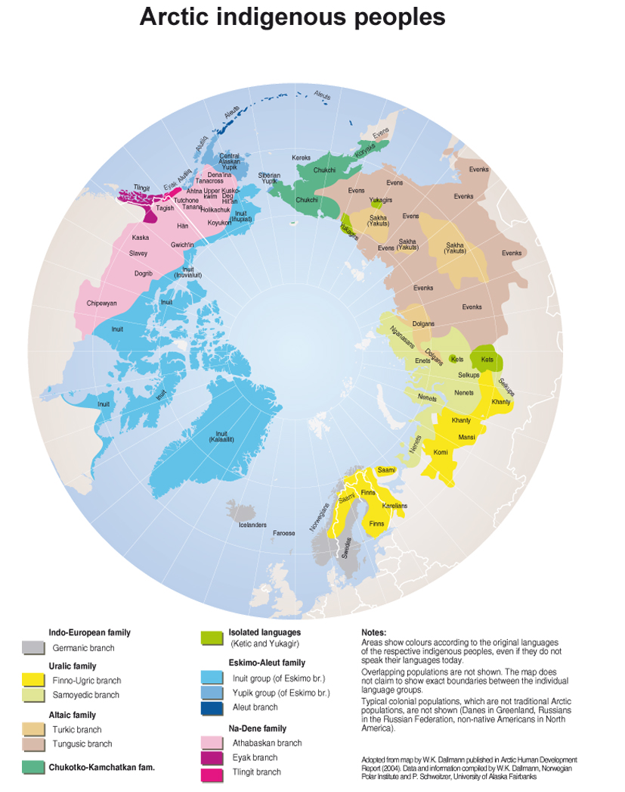

Notre podcast aborde le sujet convoitées de l'Arctique, qui attirent de plus en plus l'attention des grandes puissances mondiales. Nos journalistes présenteront ses ressources importantes, comme le gaz et le pétrole, et ses routes maritimes. Ils évoquent également les relations tumultueuses entre les puissances environnantes, comme la Russie et la Chine, ainsi que les rapports entre le Groenland et Donald Trump, lors de sa présidence. Les peuples autochtones et le Conseil de l'Arctique seront également évoqués. Une interview en plateau des représentants de Greenpeace est ensuite proposée pour aborder la dimension environnementale de la question. Nous conclurons sur une conclusion synthétisant les différents enjeux abordés.
Préparé par:
Avec l'aide des documentalistes:
L'Arctique en quelques mots:
La région arctique, qui comprend certaines parties de l'Alaska, du Canada, du Groenland, de la Norvège, de la Russie et de la Suède, fait actuellement l'objet d'un intérêt et d'une concurrence croissants entre plusieurs nations et organisations. Cela est principalement dû à la richesse des ressources naturelles de la région, notamment les réserves de pétrole et de gaz, les minéraux et les stocks de poissons, ainsi qu'à son importance stratégique pour la navigation, commercial et militaires.

L'un des principaux enjeux de l'Arctique est la question des revendications territoriales. Plusieurs pays, dont le Canada, le Danemark, la Norvège, la Russie et les États-Unis, ont revendiqué des parties de l'Arctique qui se chevauchent, ce qui a entraîné des tensions et des désaccords quant à savoir qui a le droit d'exploiter les ressources de la région. La Convention des Nations unies sur le droit de la mer (UNCLOS) fournit un cadre pour résoudre ces désaccords, mais les progrès ont été lents et la question n'est toujours pas résolue dans de nombreux domaines.
Une autre préoccupation majeure est l'impact du changement climatique sur l'Arctique. À mesure que la planète se réchauffe, la glace de mer arctique fond rapidement, ce qui ouvre de nouvelles routes maritimes, facilite l'accès aux ressources et modifie l'écosystème de la région. Cette situation a donné lieu à un nouveau "grand jeu" pour le contrôle et l'exploration de l'Arctique.
Greenpeace est une organisation environnementale internationale qui s'engage à protéger l'Arctique et ses écosystèmes sensibles. Ils ont mené des campagnes pour mettre fin aux activités de pétrole et de gaz dans la région, ainsi que pour protéger les espèces animales et les peuples autochtones qui dépendent de l'Arctique. Greenpeace a également appelé à la création d'une réserve marine internationale dans l'Arctique pour protéger les écosystèmes marins de la région contre les activités humaines néfastes. L'organisation est également active dans la sensibilisation de l'opinion publique à l'importance de protéger l'Arctique et de mettre fin au changement climatique qui affecte la région.
Malgré ces défis, certains efforts ont été déployés pour coopérer et gérer la région arctique de manière responsable. Le Conseil de l'Arctique, qui est composé des huit États de l'Arctique (Canada, Danemark, Finlande, Islande, Norvège, Russie, Suède et États-Unis), ainsi que de six organisations de peuples autochtones, sert de forum pour discuter des questions arctiques et coordonner les actions. Cependant, le conseil n'a pas d'autorité juridiquement contraignante et son processus de prise de décision est basé sur le consensus, ce qui peut rendre difficile l'action du conseil sur certaines questions.